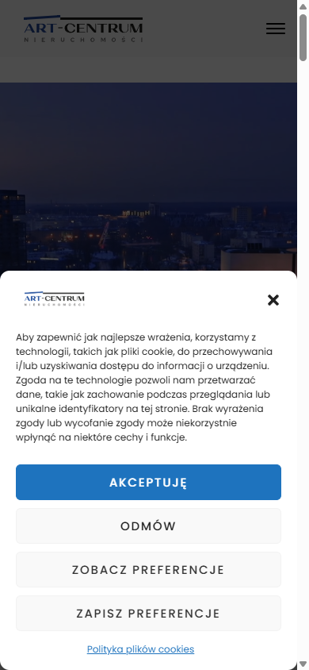

artcentrum.com.pl i oferta.artcentrum.com.pl — pomiar wersji mobilnej
Zrobiony po Państwa ogłoszeniu, na obu stronach, przy szerokości ekranu 390 px (iPhone)
Najdroższy błąd: baner główny jest w 70% pusty
Na stronie głównej slider pod nagłówkiem ma 549 px wysokości, ale zdjęcie w nim 165 px — czyli 384 px to pusty granatowy prostokąt. To 45% wysokości pierwszego ekranu telefonu, na którym nic nie ma.
Pierwszy nagłówek z treścią („Kim jesteśmy?…") pojawia się dopiero na 1314 px, czyli po przewinięciu półtora ekranu. Klient, który wchodzi z telefonu, przez pierwsze półtora ekranu nie widzi ani jednej oferty, ani jednego zdania o biurze.
Dlaczego to kosztuje: to jest pierwszy ekran — miejsce, w którym decyduje się, czy ktoś zostanie na stronie. Ten sam układ na komputerze wygląda dobrze; problem jest tylko na telefonie, gdzie wchodzi większość ruchu z Google. Poprawka to podmiana sposobu skalowania zdjęcia w sliderze, nie przebudowa strony.
Jak to wygląda — zrzuty z pomiaru

Liczby — strona główna artcentrum.com.pl
| Co mierzone (przy 390 px) | Wynik | Ocena |
|---|---|---|
| Wysokość slidera głównego / wysokość zdjęcia w nim | 549 px / 165 px | 70% slidera puste |
| Pozycja pierwszego nagłówka z treścią | 1314 px od góry | półtora ekranu w dół |
| Nagłówki H1 na stronie | 0 | brak |
Zdjęcia bez atrybutu alt | 28 z 35 | 80% |
| Elementy klikalne niższe niż 40 px | 52 z 89 | 58% |
| Waga strony (transfer) | 2 229 KB, 63 żądania | ciężka |
Opis w Google (meta description) | jest, 158 znaków | dobrze |
| Język strony, znacznik viewport | pl-PL, width=device-width | dobrze |
| Przewijanie w poziomie | brak | dobrze |
Liczby — wyszukiwarka ofert oferta.artcentrum.com.pl
| Co mierzone (przy 390 px) | Wynik | Ocena |
|---|---|---|
| Wysokość okna zgody na pliki cookie | 503 px z 844 px ekranu | 60% ekranu, warstwa 99999 |
| Kolizja logo agencji z oknem zgody | logo na ramce okna, widać je dwa razy | błąd układu |
| Elementy klikalne niższe niż 40 px | 40 z 82 | 49% |
| Bloki tekstu mniejsze niż 14 px | 10 | trudne do czytania |
| Waga strony (transfer) | 921 KB, 98 żądań | do poprawy |
| Nagłówek H1 na podstronie | „Mieszkania na sprzedaż w Bydgoszczy" | dobrze |
Obrazki z atrybutem alt | 63 z 64 | dobrze |
Co jest zrobione dobrze
Strony mają poprawny opis i tytuł w Google, znacznik viewport i język polski. Wyszukiwarka ofert ma sensowny nagłówek H1 i prawie wszystkie zdjęcia z opisami alternatywnymi, a podstrony z ofertami ładują się w rozsądnej wadze. Fundament jest w porządku — problem leży w układzie na telefonie, nie w tym, że strona jest zrobiona źle.
Co proponuję zrobić w pierwszej kolejności
- Naprawić slider na stronie głównej, żeby zdjęcie wypełniało całą jego wysokość. Efekt: pierwszy ekran telefonu przestaje być w połowie pusty.
- Dodać H1 na stronie głównej i opisy
altdo zdjęć — to bezpośrednio wpływa na to, jak strona wypada w wyszukiwaniu obrazów i w Google. - Poprawić okno zgody na pliki cookie na wyszukiwarce ofert: mniejsze, bez kolizji z logo, tak żeby lista ofert była widoczna od razu.
- Zwiększyć elementy klikalne na stronie głównej do co najmniej 44 px wysokości — na telefonie trafia się w nie palcem, a teraz ponad połowa jest za mała.
Proponowany sposób rozliczenia
| Etap | Zakres | Cena |
|---|---|---|
| Pilot (1 dzień) | Punkty 1–2: slider + H1 + opisy zdjęć na stronie głównej. Rozliczenie po dostarczeniu zrzutów „przed i po" — jeśli poprawa nie jest widoczna, nie ma za co płacić. | 249 zł |
| Etap 2 | Punkty 3–4 plus przegląd pozostałych podstron pod kątem telefonu, z listą priorytetów. | do ustalenia po pilocie |
Wszystko przez Useme, z przeniesieniem praw autorskich do zmian.